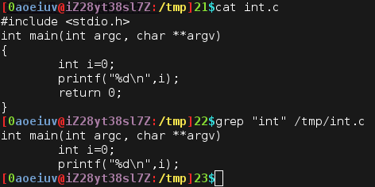
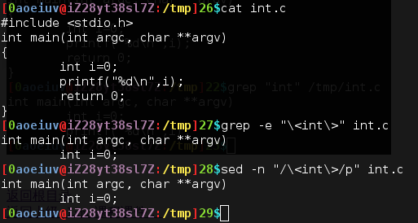
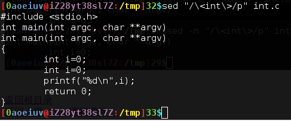
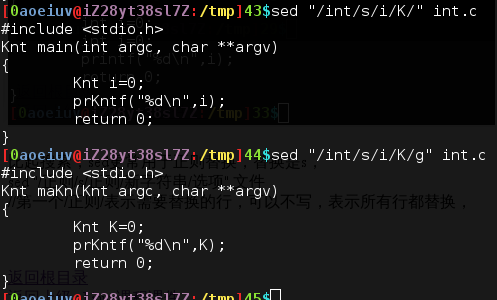
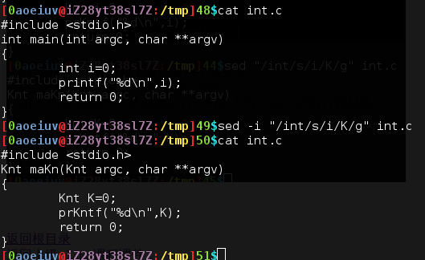
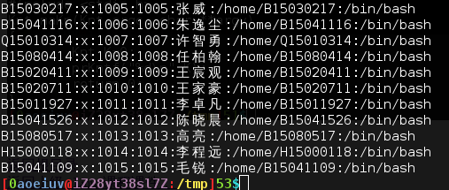
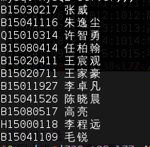
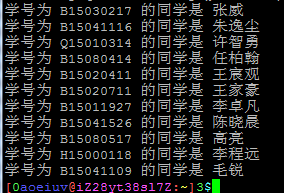

grep,sed,awk,找匹配的文字，这些命令都是比较强大的，尤其是组合起来，这里只讲最常用的用法和参数，多用man自学，比如嘛，有个代码源文件。
#includeint main(int argc, char **argv) { int i=0; printf("%d\n",i); return 0; }
放在/tmp/int.c，要找里面出现int的行，可以这样，grep "int" /tmp/int.c。

常用的参数也就三个，-H输出时带文件名，-i忽略大小写，-v是颠倒，匹配的不输出，不匹配的才输出，这三个参数自己找个文件试试。
然后，如果懂正则表达式，sed是个很强大的东西，比如嘛，上面的输入的printf那一行不是我要的，可以用正则筛选，grep加个-e参数也可以支持正则，可以简单搜索。
grep -e "\" int.c sed -n "/\/p" int.c 
sed用法比较复杂，而且很多样，最基本的用法是，sed "/正则/操作" 文件，以上面的命令为例，p是print打印，就是把匹配的行打印一遍，至于-n，是因为sed默认会把整个文件打印一遍，加-n就不打印整个文件。

比起搜索，sed更常用于正则替换，替换是s，sed "/正则1/s/正则2/新字符串/选项" 文件，第一个/正则1/表示需要替换的行，可以不写，表示所有行都替换，最后的选项就说一个g，表示整行所有匹配正则2的字符串都替换了，没有g是只替换行里第一个匹配的。

还有个sed的参数-i，表示替换后直接写入文件，而不是打印出来。

awk，这个最强大，强大到可以当成脚本语言了，但我们只学最基本的功能，就是筛选出一行字符串里的一部分，首先说个文件，/etc/passwd，这里存着每个用户的名字，id，家目录，默认Shell之类的。

然后来试试awk。
awk -F ":" '{print $1,$5}' /etc/passwd

-F参数表示用什么分隔字符串，默认是空格，print后面跟上要输出的字符串，$加数字表示行里的第几部分，也可以插入字符串，比如：
awk -F ":" '{print "学号为",$1,"的同学是",$5}' /etc/passwd

关于单引号和双引号，其实说过了，单引号里面的特殊符号不用转义，比如这里可以改成双引号，"{print \$1,\$5}"，如果要将这些组合起来多次筛选，就需要Shell的管道，下节课介绍。